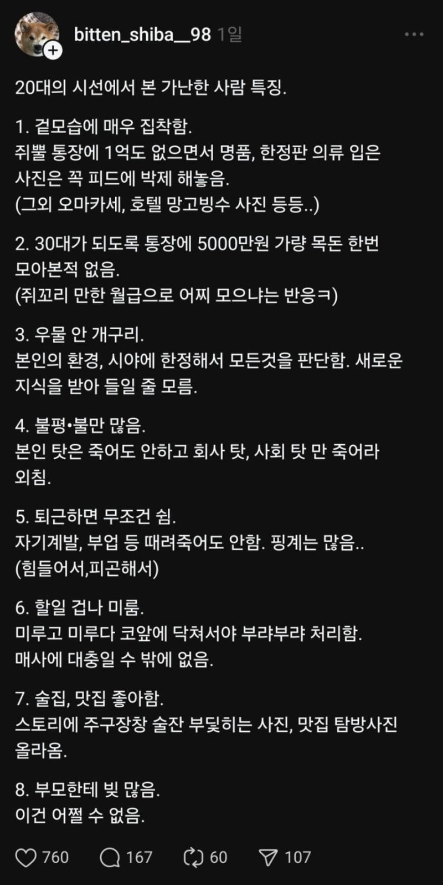
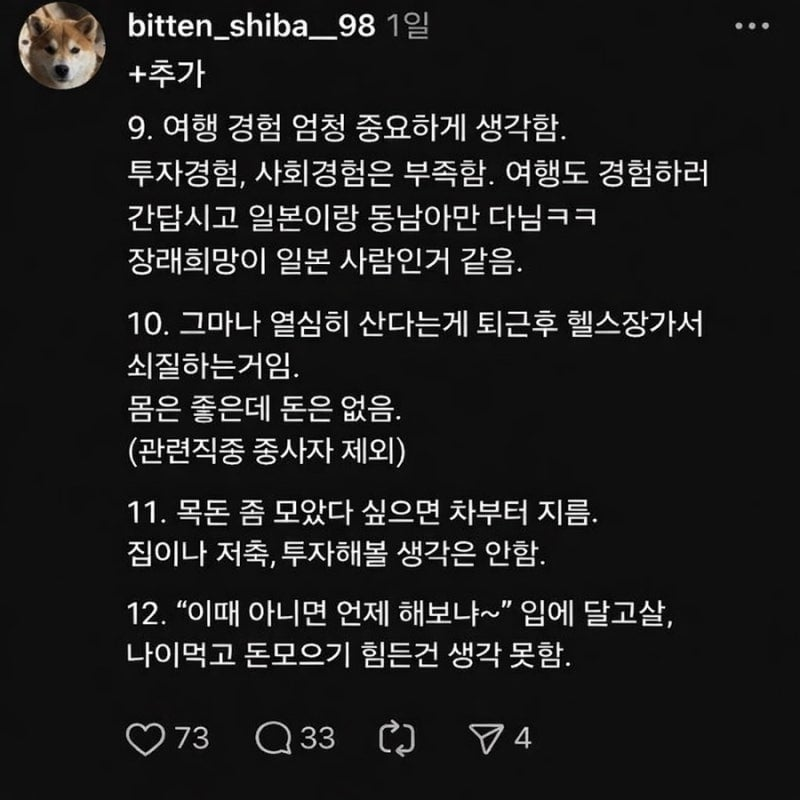

공감함? ㅋㅋㅋㅋ


공감함? ㅋㅋㅋㅋ
98이면 29살 아녀? 자기 비판인가..
퇴근 후에 운동 가는게 얼마나 힘든건지 모르는 무지렁이네이
이대남 이 나쁜녀석들
30대부터 인생 갈림길이라 같은 30대끼리도 엄청나게 삶의 모습이 달라짐
쓰는 것도 좋은데 잘 모아서 노후대비하자
개인적으로 여행이 보통은 돈 쓰러 가는건데 그게 경험이 됨? 잘 이해가 안감
평가질 비교질좀 하지마라 ㅋㅋㅋ 자기인생 알아서 사는거지모 ㅋㅋ 뭐든 정형화하려고하네
왜 남인생 이래라 저래라임?
근데 목돈 모이니까 차는 사고 싶어지던데 그 외에는 좀 불리고 싶음
뭐라는거야 애송이새끼가ㅋㅋ
나이 처먹고 돈 없는데 목 빳빳한놈이 추하긴하지
쇠질은 애 생기면 진짜 잠 모자라서 생각도 안 드는데 3040에 퇴근 쇠질 애까고도 하는거면 리스펙한다 어케했노
반성해야지
왜케 다들 긁혔어..
30-40대가 주류 인듯?
이정도로 격하게 반응할 줄은 몰랐네
다른 세대 혐오는 잘 만 하면서 ㅠ
공감되는거 개많네ㅋㅋㅋ
겉모습 집착, 술집맛집, 여행경험, 카푸어, 욜로
거렁뱅이들 특징 딱 맞구만ㅋㅋㅋ
여행은 다른 곳 갔다가 돌고 돌아 일본밖에 안 가게 되던데 ㅋㅋ...
일본 어디가 좋음?
현생이 바빠서 한번도 못가봄 ㅠ
완전 처음이면 오사카나 후쿠오카가 제일 좋긴함 오사카는 다른지역까지(고베 나라 교토) 터치할수있는 장점이있고 후쿠오카는 완전 초보존이라고 생각하면됨 어디 안가고 시내에서만 먹고 쇼핑한다치면 후쿠오카고 만약 어디로 빠져나간다하면 나가사키 강추
오오오 추천 감사요
나가사키 짬뽕 맛있나여
개인적으론 맘에 들었음 뽀얀 해물감칠맛 국물이 맥주가 술술들어가는맛
난 다 안했는데도 거렁뱅이인데
근데 이거는 그냥 갈라치기 혐오글인디...
남들보다 더 받고 싶으면 남들보다 더 해야지
씨이발 이젠 20 <-> 30 도 갈라치냐 ㅋㅋㅋ
걍 본인의 인생을 열심히 살아라
이야 효과 좋네 ㅋㅋㅋ
저거 2030이야기 아니냐 정신밖힌 3040은 주담대에 애 키우느라 정신없을텐데? ㅋㅋㅋㅋ
헤헤
걍뇌피셜같은데
흔히들 말하는 엠생이나 욜로족은 어느 세대에도 있다고 생각한다.
다만, 욜로족 외치던 시기가 16~17년도였으니깐 현 20대가 그 시기에는 10대 ~ 20대 초반인걸 감안하면 지금 3040이 그래보였을 수도 있음.
근데 시발 퇴근하고 힘든 건 시발 이 나이 되어 봐야 알지 나는 안 그래~ 이 지랄 하다가 ㅋㅋㅋㅋ
ㅋㅋㅋ웃다가 10번 11번에서 난가? 해버림ㅋㅋㅋㅋ
퇴근을 안 해봤나
알아서 사는거지 왤케 요새 찐따 일침충 새끼들이 많냐 ㅋㅋ
나중에 돈없는 노인돼서 나라한테 징징 안거릴 자신있는 사람은 인정
근데 복지네 연금이네 징징거릴꺼면 일침받아도 쌈
뭔개소리야 누가보면 저런 사람들은 세금 안내면서 산 사람인줄 알겠네 ㅋㅋ
돈이 있는 노인이든 없는 노인이든 결국 나중에 받는 혜택이 적냐 크냐의 차이인데
무슨 과소비했다고 복지나 연금혜택 누리지말라고 할 기세네 ㅋㅋ
ㅋㅋ 1억도 없는 그지 깽깽이충에서 다들 긁혔네
전혀 공감이 안됨
돈을 모으려면
취미생활을 안하거나
결혼안해서 자식이 없거나
부모를 잘만나면 쉬움
그렇지 않으면 쉽지 않다.
음.. 나군
저런 평가질도 20대 판타지에 절여 있을때나 할 수 있지
퇴근하고 다른거 또하는사람 난 존경한다
난 무조건 게임함
+자위 많이함
자기 삶에 집중하는 사람한텐 그냥 그렇군 하고 넘어가는겨..
이런 글에 긁힌다면 다른 사람의 의견에 휘둘리는지는 않는지 돌아보도록 하자
저거 30,40이 철없는 50,60 보고 하는 소리랑 똑같지 않나? 나이를 떠나서 저런 연령을 지닌 사람이 저리 꺼드럭되면 알아서 손절됨. 20대가 본 가난한 30,40 특징이 아니라 그냥 나이 어린 사람이 본 가난한 어르신들의 특징 이리 적어도 어색하지 않아....
ㅋㅋㅋㅋㅋ 크게 틀린말 없긴해
자기 미래이야기 쓴거아님?
공감하는데 10조차 안함
흠.. 30대가 딱 인생의 성적표가 슬슬 나오는 시기라 그런가?
저위에 말한것들중 몇가지는 공감되긴함.
지금 나도 30대 중반인데 슬슬 친구들 보면 자기계발 투자 운동 결혼 등 모든것들이 하는애와 안하는애들 갈리고 삶의 수준차도 갈리기시작함.
댓글에서 말한 부모가 돈많음 부자금방됨 이거? 맞는말임 근데 그런애들보다 그냥 평범한부모님일때 기준으론 성실한애들은 중간이상은갔고 아닌애들 요행바라는애들 유행 휩쓸리는애들은 거의다 좆되긴했음.
반대로 20대 초부터 공장들어가서 사고는 쳐서 애낳고 일한친구는 집도있고 차도있고 안정적으로 살더라 애기들때문에 강제로 성실히 사니깐.
결론은 캐바케긴한데 본문이 크게 틀린건 아니고 성실하게 살면 어떻게든 잘살게된다.
개붕이들 다 행복해라
이때 아니면 언제해보냐 << 판단 많이 갈림